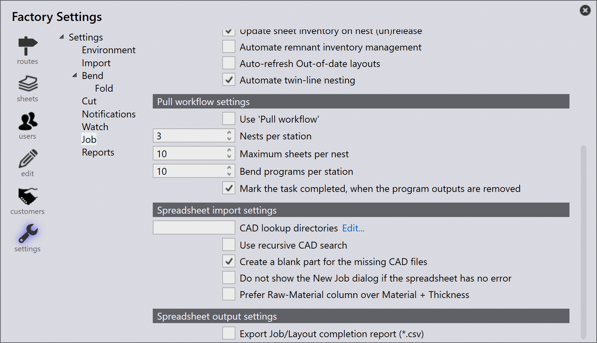

导入作业
从 csv 或 xlsx 导入
您还可以以常见文本格式导入作业
-
点击 File → Open → 导入套料，打开文件夹对话框出现。选择
C:\Program Files\Metamation\Praxis\Samples\Jobs\C0\C0.csv。
-
如果所有零件存在于 csv 位置或查找文件夹目录中，新套料 窗口会出现，列出所有与 csv 字段匹配的零件。
-
缺失的零件被忽略，不会出现在 新套料 窗口中。
-
最初零件状态为初始状态。

-
点击 OK，现在零件导入到零件库中。CAD 验证、折弯和切割工装实例的工装完成，可以在 Pmonitor 屏幕中监控。

为缺失的 CAD 文件创建落料零件
使用电子表格（.csv 或 .xlsx）导入作业时，您有时可能会有引用系统中不可用的 CAD 文件的行。
-
要处理这个问题，转到 出厂 → 设置 → 套料，在 电子表格导入 下启用 为缺失的 CAD 文件创建落料零件

选择此选项后：
-
如果在作业导入期间任何行的 CAD 文件缺失，系统将自动创建空白零件来代替缺失的 CAD 文件。
-
在 新套料 窗口中，这些缺失的零件会以黄色突出显示，表示关联的 CAD 文件缺失。

-
缺失的零件仍将保留其从 CSV 映射的字段（如零件名称、材料、厚度、数量等）。但是，其零件状态将显示为初始状态，这意味着它只是一个没有实际几何形状的空占位符。

这确保了作业导入可以继续进行，而不会因为缺少 CAD 文件而出错 — 您可以稍后在 CAD 文件可用时更新或替换空白零件。
如果电子表格没有错误，则不显示新建套料对话框
出厂 → 设置 → 套料 → 电子表格导入→ 如果电子表格没有错误，则不显示新建套料对话框
-
选择此复选框后，如果电子表格没有错误（没有缺失零件、缺失日期或无效数据），系统会自动创建新作业而不显示新建作业对话框。
-
清除此复选框后，新建作业对话框始终会出现供用户审查和确认，即使电子表格没有错误。
Prefer raw-material column over material + thickness
出厂 → 设置 → 套料→Prefer Raw-Material column over Material + Thickness
-
选择此复选框后，系统期望电子表格使用原材料列（例如，Steel-20）。这意味着材料类型和厚度应在一列中组合为单个值。
-
清除此复选框后，系统期望电子表格具有单独的材料和厚度列（例如，Steel 和 2.00）。系统在导入期间在内部组合它们。

使用 CSV/XLSX 监视文件夹
-
在 出厂 → 设置→ 查看 中选中 启用“实时文件夹“ 和 也查看子文件夹。
-
设置监视文件夹路径（UNC 或映射驱动器）。
-
在 电子表格导入 中，选中 从“实时文件夹”导入电子表格。

-
从电子表格导入选项中选择 导入套料。
-
复制
C:\Program Files\Metamation\Praxis\Samples\Jobs\C0\C0.csv并将其粘贴到监视文件夹中。 -
系统检查 CSV 并尝试自动创建作业。
-
如果 CAD 文件缺失，则不会创建作业，因为找不到所需的 CAD 数据。
CAD 查找目录和递归 CAD 搜索 - 未配置
-
在 出厂 → 设置 → 套料 → 电子表格导入 中，如果未设置 CAD lookup directories 且未使用 使用递归 CAD 搜索，系统不会自动搜索 CAD 文件。
-
如果选中 为缺失的 CAD 文件创建落料零件 复选框，即使 CAD 文件缺失，仍会创建作业。
-
在这种情况下，作业中的所有零件都将创建为初始（空白）零件 — 这意味着它们没有几何形状，因为找不到 CAD 文件。

CAD 查找目录和递归 CAD 搜索 - 已配置
当在 出厂 → 设置 → 套料 → 电子表格导入 下将 CAD 查找目录 设置为（C:\Program Files\Metamation\Praxis\Samples）并启用 使用递归 CAD 搜索 时：
-
系统会自动搜索指定的文件夹及其所有子文件夹，查找电子表格中提到的所需 CAD 文件。
-
还启用了 为缺失的 CAD 文件创建落料零件，因此如果仍然找不到任何 CAD 文件，系统将创建空白零件作为占位符。